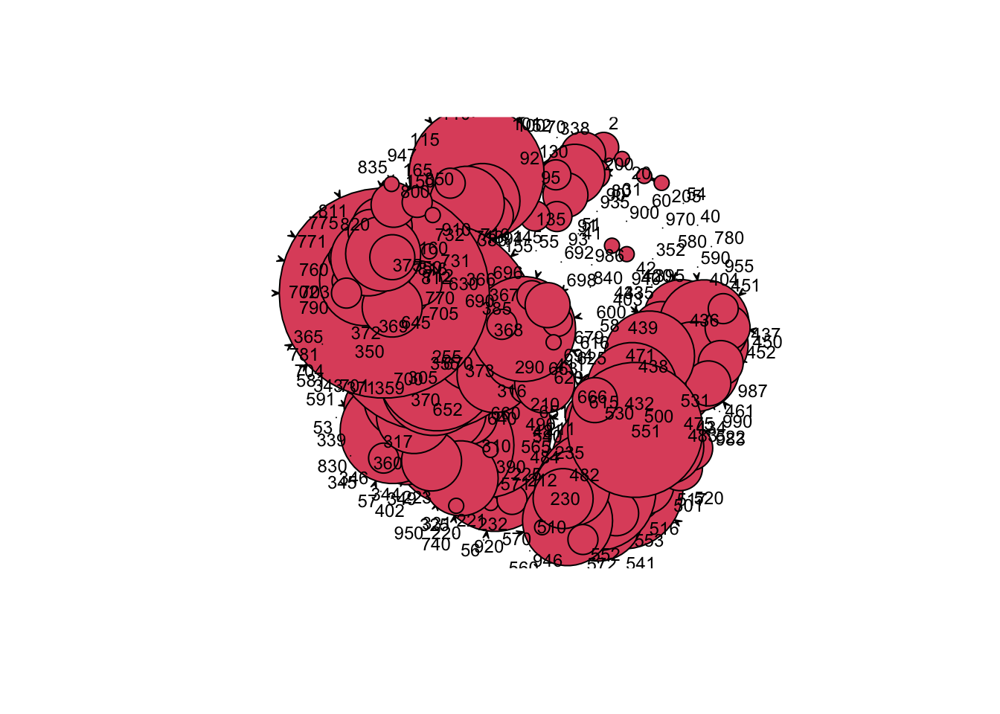
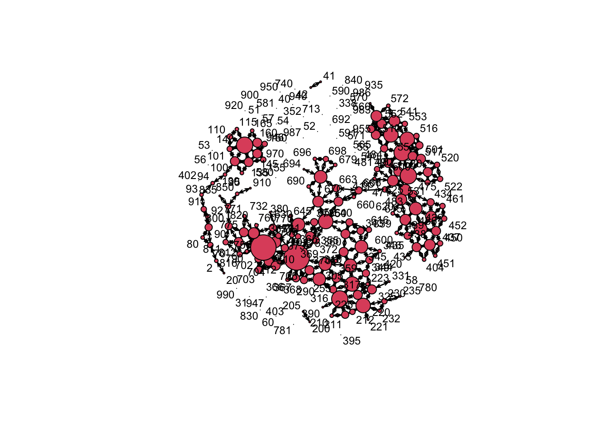
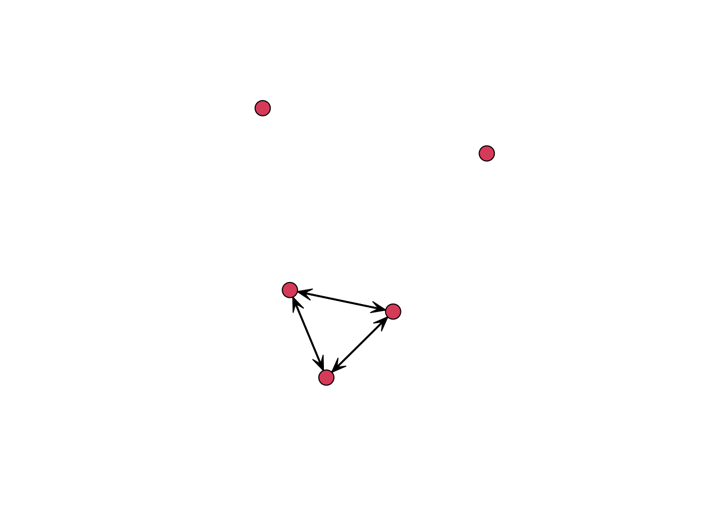
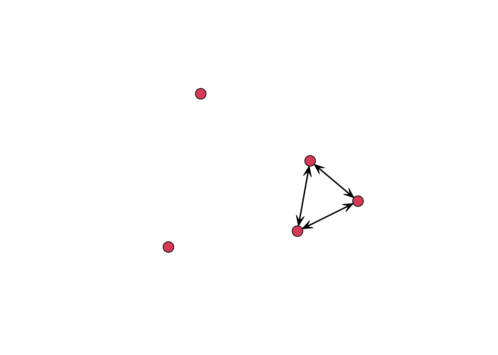

This week we will estimate ERMG models. We will be looking at the relationship between two networks: Militarized Interstate Disputes and Geographic Adjacency. After this there is a short exercise in attaining networks from a monadic dataset. We will also work a bit more on the vizualization of networks in this code.
library(cshapes)## The legacy packages maptools, rgdal, and rgeos, underpinning the sp package,
## which was just loaded, will retire in October 2023.
## Please refer to R-spatial evolution reports for details, especially
## https://r-spatial.org/r/2023/05/15/evolution4.html.
## It may be desirable to make the sf package available;
## package maintainers should consider adding sf to Suggests:.
## The sp package is now running under evolution status 2
## (status 2 uses the sf package in place of rgdal)library(statnet)## Loading required package: tergm## Loading required package: ergm## Loading required package: network##
## 'network' 1.18.1 (2023-01-24), part of the Statnet Project
## * 'news(package="network")' for changes since last version
## * 'citation("network")' for citation information
## * 'https://statnet.org' for help, support, and other information##
## 'ergm' 4.5.0 (2023-05-27), part of the Statnet Project
## * 'news(package="ergm")' for changes since last version
## * 'citation("ergm")' for citation information
## * 'https://statnet.org' for help, support, and other information## 'ergm' 4 is a major update that introduces some backwards-incompatible
## changes. Please type 'news(package="ergm")' for a list of major
## changes.## Loading required package: networkDynamic##
## 'networkDynamic' 0.11.3 (2023-02-15), part of the Statnet Project
## * 'news(package="networkDynamic")' for changes since last version
## * 'citation("networkDynamic")' for citation information
## * 'https://statnet.org' for help, support, and other information## Registered S3 method overwritten by 'tergm':
## method from
## simulate_formula.network ergm##
## 'tergm' 4.2.0 (2023-05-30), part of the Statnet Project
## * 'news(package="tergm")' for changes since last version
## * 'citation("tergm")' for citation information
## * 'https://statnet.org' for help, support, and other information##
## Attaching package: 'tergm'## The following object is masked from 'package:ergm':
##
## snctrl## Loading required package: ergm.count##
## 'ergm.count' 4.1.1 (2022-05-24), part of the Statnet Project
## * 'news(package="ergm.count")' for changes since last version
## * 'citation("ergm.count")' for citation information
## * 'https://statnet.org' for help, support, and other information## Loading required package: sna## Loading required package: statnet.common##
## Attaching package: 'statnet.common'## The following object is masked from 'package:ergm':
##
## snctrl## The following objects are masked from 'package:base':
##
## attr, order## sna: Tools for Social Network Analysis
## Version 2.7-1 created on 2023-01-24.
## copyright (c) 2005, Carter T. Butts, University of California-Irvine
## For citation information, type citation("sna").
## Type help(package="sna") to get started.## Loading required package: tsna##
## 'statnet' 2019.6 (2019-06-13), part of the Statnet Project
## * 'news(package="statnet")' for changes since last version
## * 'citation("statnet")' for citation information
## * 'https://statnet.org' for help, support, and other information## unable to reach CRANThe first part of the code this week is to generate the networks that we already discussed last week and engage a bit more in the vizualiztion of them.
Step 1: Create a minimal distance matrix
dist.matrix <- distmatrix(date=as.Date("2002-1-1"),type = "mindist",useGW = FALSE)
head(dist.matrix)## 2 20 31 40 41 42 51
## 2 0.0000 0.000 105.67852 233.68139 931.8133 1072.0053 779.2407
## 20 0.0000 0.000 1689.61548 2049.94455 2568.3906 2618.0301 2603.3060
## 31 105.6785 1689.615 0.00000 93.91066 120.0389 196.3491 415.4978
## 40 233.6814 2049.945 93.91066 0.00000 85.5927 255.2915 146.1385
## 41 931.8133 2568.391 120.03887 85.59270 0.0000 0.0000 195.1164
## 42 1072.0053 2618.030 196.34912 255.29149 0.0000 0.0000 452.9208
## 52 53 54 55 56 57 58 60
## 2 2544.865 2540.922 2238.7089 2440.938 2376.6255 2400.7576 2119.8397 2012.3435
## 20 3592.436 3386.465 3109.0658 3482.017 3282.7766 3359.5924 2936.0214 2901.1683
## 31 1673.713 1665.132 1366.8137 1565.642 1500.7252 1524.1605 1257.8334 1148.0217
## 40 1699.371 1720.694 1434.6975 1600.777 1554.7055 1572.1143 1339.3313 1228.9109
## 41 1356.950 1399.332 1130.1073 1262.770 1232.1430 1243.9214 1050.9224 943.0321
## 42 1123.450 1096.990 801.3999 1007.741 932.5975 957.6849 704.7911 594.8160
## 70 80 90 91 92 93 94
## 2 0.0000 1040.2524 1104.0943 1080.2435 1427.6847 1142.2515 1593.587
## 20 1808.4167 2626.6572 2715.9748 2856.4040 3087.9068 2957.7097 3388.509
## 31 928.9212 1215.5546 1341.0204 1108.7852 1515.9851 1122.2832 1536.380
## 40 199.2574 506.9458 626.4879 637.0349 933.0672 714.0417 1161.477
## 41 1309.1490 1417.4512 1494.1032 1002.7094 1507.8356 1002.7094 1291.921
## 42 1561.3453 1678.3837 1754.0984 1254.3933 1762.4629 1254.3933 1496.479
## 95 100 101 110 115 130 135 140
## 2 1722.875 1662.4580 1740.0085 2855.061 3278.105 2631.270 2845.445 2834.662
## 20 3553.148 3401.6951 3476.6969 3923.925 4234.421 4471.356 4677.889 4264.464
## 31 1376.529 954.6860 1027.0449 1991.670 2407.878 2227.282 2325.939 2056.355
## 40 1147.009 885.3287 961.0652 2006.950 2431.451 2038.675 2203.715 2025.904
## 41 1071.471 617.0569 672.6463 1661.545 2087.568 1911.959 2003.219 1700.306
## 42 1170.486 569.9957 617.1451 1444.723 1856.803 1962.249 1994.102 1597.479
## 145 150 155 160 165 200 205 210
## 2 4159.548 5355.282 4868.475 5417.315 6593.781 4119.931 4034.600 4996.947
## 20 5887.352 6971.556 6685.849 7221.207 8191.609 2847.041 2959.007 3783.908
## 31 3487.859 4661.749 4274.558 4788.862 5901.518 6302.687 6148.174 7105.710
## 40 3418.798 4599.909 4181.520 4709.763 5840.814 6655.324 6469.999 7419.625
## 41 3138.686 4309.300 3938.889 4445.518 5548.354 6545.561 6350.368 7294.715
## 42 3084.733 4253.959 3889.083 4393.374 5485.628 6417.008 6211.247 7147.750
## 211 212 220 221 223 225 230 232
## 2 4959.359 5220.776 4587.260 5663.840 5605.915 5418.096 4523.796 5315.979
## 20 3847.530 4078.403 3497.760 4570.043 4496.031 4338.114 3393.750 4205.753
## 31 7054.774 7303.386 6566.437 7558.641 7642.274 7401.733 5502.682 7100.490
## 40 7364.152 7600.954 6841.937 7818.013 7915.987 7666.228 5710.292 7356.453
## 41 7237.959 7470.329 6704.773 7663.687 7775.798 7520.795 5494.613 7195.854
## 42 7089.121 7313.735 6537.799 7468.426 7603.061 7340.294 5199.710 6991.526
## 235 255 290 305 310 316 317 325
## 2 3243.235 5133.990 5537.423 5593.206 6024.382 5601.060 5999.432 5507.072
## 20 2188.493 3675.356 3843.368 4430.131 4564.789 4198.108 4433.046 4423.499
## 31 4561.418 7272.944 7747.894 7639.962 8126.246 7730.196 8124.001 7472.730
## 40 4809.625 7595.460 8111.576 7915.688 8415.645 8043.726 8427.607 7734.342
## 41 4638.990 7470.425 8000.381 7776.763 8277.482 7916.893 8295.569 7584.920
## 42 4426.289 7321.394 7867.779 7605.598 8106.697 7765.082 8134.485 7397.807
## 331 338 339 343 344 345 346 349
## 2 5992.601 6646.064 6557.178 6666.924 5976.308 6285.325 6138.043 5913.049
## 20 4912.210 5535.179 5194.091 5265.329 4720.148 4808.575 4859.620 4680.489
## 31 7949.694 8340.895 8541.170 8653.928 7996.580 8367.887 8170.725 7955.509
## 40 8210.634 8587.249 8801.575 8914.368 8263.606 8644.328 8438.461 8227.261
## 41 8059.315 8409.961 8648.623 8761.399 8118.739 8504.377 8293.755 8085.351
## 42 7867.959 8175.538 8453.270 8565.769 7937.622 8330.177 8112.466 7909.058
## 350 352 355 359 360 365 366 367
## 2 6750.855 7929.321 6641.971 6607.175 6363.102 79.97761 5467.264 5642.816
## 20 5381.807 6179.043 5068.628 4684.083 4652.219 1254.81420 3435.835 3598.479
## 31 8655.951 9886.608 8713.376 8792.968 8461.526 7354.38757 8009.775 8043.360
## 40 8912.389 10142.201 8982.468 9121.283 8744.808 7528.39434 8451.620 8458.469
## 41 8751.395 9978.726 8837.768 8996.365 8606.676 8286.38714 8364.375 8362.816
## 42 8542.854 9763.700 8655.200 8844.750 8435.123 8207.37329 8255.500 8246.121
## 368 369 370 371 372 373 375 380
## 2 5803.626 6212.915 5853.973 7393.057 7186.417 7291.938 4301.811 4418.511
## 20 3733.803 4259.953 3853.857 5709.177 5394.580 5663.228 2349.530 2361.568
## 31 8075.183 8432.397 8313.990 10337.775 9957.640 10423.832 7555.225 7344.713
## 40 8480.988 8791.111 8700.386 10666.522 10290.911 10763.826 8032.907 7806.027
## 41 8382.187 8674.912 8594.640 10537.691 10164.413 10638.076 8067.725 7743.392
## 42 8262.121 8518.983 8466.895 10376.177 10007.446 10481.124 7999.457 7633.233
## 385 390 395 402 403 404 411 420
## 2 4185.387 5060.951 3264.142 4943.591 8688.870 5958.635 8587.412 5867.629
## 20 2218.949 3419.355 1643.958 4158.124 7712.251 5105.278 7575.006 5000.657
## 31 7013.450 7296.983 5631.222 4987.702 8898.529 6028.502 8971.114 5982.656
## 40 7465.497 7687.221 6101.581 5141.205 9024.745 6170.020 9112.139 6128.877
## 41 7385.823 7585.767 6107.424 4888.813 8756.514 5910.137 8850.329 5871.462
## 42 7285.461 7461.746 6033.672 4547.561 8404.223 5563.025 8501.437 5526.047
## 432 433 434 435 436 437 438 439
## 2 5792.523 5657.945 7413.893 5239.915 7055.187 6790.622 6155.250 6839.673
## 20 4740.822 4756.820 6406.212 4266.745 5992.969 5859.187 5263.093 5850.955
## 31 6407.097 5863.140 7893.408 5739.424 7677.917 6998.192 6254.352 7225.396
## 40 6565.375 6014.833 8052.978 5921.312 7851.550 7141.582 6392.028 7380.317
## 41 6314.512 5760.532 7801.846 5686.587 7609.931 6881.991 6130.106 7126.851
## 42 5973.749 5417.404 7460.351 5358.943 7275.923 6534.832 5781.620 6783.421
## 450 451 452 461 471 475 481 482
## 2 6751.013 6473.756 7120.520 7320.208 8293.589 7478.448 8872.333 8830.881
## 20 5859.563 5593.603 6141.234 6320.425 7205.320 6438.455 7870.094 7762.925
## 31 6776.943 6504.355 7507.378 7779.042 8914.013 8116.900 9167.302 9476.996
## 40 6901.996 6635.945 7662.128 7937.764 9064.993 8285.531 9293.461 9636.330
## 41 6634.243 6371.081 7407.716 7686.190 8808.305 8040.091 9025.101 9384.109
## 42 6282.370 6020.786 7063.908 7344.406 8462.649 7702.846 8672.732 9041.385
## 483 484 490 500 501 510 516 517
## 2 7628.362 9073.167 9316.529 10354.842 10541.903 10681.699 10695.03 10630.338
## 20 6499.053 8042.535 8242.843 9236.945 9411.838 9581.679 9607.02 9537.677
## 31 8861.290 9522.228 9744.662 11268.260 11554.475 11426.700 11347.68 11317.069
## 40 9075.066 9657.381 9856.097 11441.487 11734.635 11583.278 11495.89 11466.348
## 41 8862.226 9387.531 9576.660 11197.184 11495.185 11328.357 11236.49 11207.517
## 42 8567.423 9035.213 9228.045 10859.688 11161.278 10983.336 10888.68 10860.047
## 520 522 530 531 540 541 551 552
## 2 10534.626 10475.892 9911.621 9711.283 9537.915 11731.73 10929.059 11556.50
## 20 8957.914 8820.226 8507.685 8175.521 8555.218 10698.76 9906.977 10566.99
## 31 12103.494 11965.192 11283.633 11228.541 9693.376 11948.04 11039.521 11544.79
## 40 12315.557 12179.105 11474.307 11450.084 9807.512 12048.15 11136.452 11630.66
## 41 12099.547 11964.704 11243.583 11242.808 9530.062 11759.18 10846.271 11329.43
## 42 11795.775 11663.762 10916.803 10954.555 9180.572 11415.83 10503.617 10995.57
## 553 560 565 570 571 572 580 581
## 2 11523.14 11680.25 10486.731 12557.55 11267.12 12609.94 12947.03 12490.38
## 20 10448.27 10776.48 9589.524 11640.79 10308.44 11637.25 11610.42 11379.59
## 31 12019.72 11065.77 10174.972 12080.93 11134.69 12359.25 13430.24 13158.85
## 40 12147.38 11120.46 10252.179 12139.52 11216.51 12428.14 13536.61 13292.88
## 41 11877.88 10789.06 9941.219 11810.54 10910.40 12107.58 13250.18 13025.99
## 42 11525.70 10497.94 9617.409 11513.88 10581.25 11796.22 12905.47 12673.97
## 590 591 600 615 616 620 625 630
## 2 13809.07 12227.70 5087.777 5378.406 6171.141 6640.655 8454.634 7532.764
## 20 12605.77 10882.44 3996.209 4312.859 5047.073 5512.055 7324.586 5870.990
## 31 14875.16 13385.82 5729.362 6410.989 7792.411 8076.793 9851.224 10498.875
## 40 14980.67 13532.86 5913.885 6625.713 8037.053 8305.792 10065.572 10813.413
## 41 14691.79 13271.72 5682.562 6415.231 7849.870 8107.621 9852.690 10679.891
## 42 14348.69 12922.56 5358.730 6127.958 7599.728 7838.883 9556.678 10510.711
## 640 645 651 652 660 663 666
## 2 7048.050 7841.339 7717.355 7863.830 8199.687 8325.839 8268.883
## 20 5367.064 6108.707 6481.184 6083.207 6312.950 6492.060 6452.676
## 31 9106.589 10504.508 9433.532 10135.109 10201.370 10282.210 10219.923
## 40 9370.515 10762.069 9676.687 10394.516 10458.033 10536.102 10474.221
## 41 9222.129 10601.839 9494.174 10238.253 10296.311 10369.309 10308.182
## 42 9028.622 10390.747 9249.224 10033.710 10083.458 10148.210 10086.802
## 670 679 690 692 694 696 698
## 2 8457.862 9746.819 8598.650 8977.235 8975.742 8901.674 8861.981
## 20 6631.923 8250.818 6976.855 7435.933 7455.281 7527.072 7497.826
## 31 10404.141 11790.456 11372.913 11883.182 11938.933 12100.693 12321.250
## 40 10651.521 12020.826 11632.227 12139.981 12195.964 12355.466 12592.011
## 41 10474.256 11821.683 11474.831 11977.228 12033.606 12188.831 12440.648
## 42 10236.141 11545.980 11262.897 11759.308 11816.186 11964.358 12239.480
## 700 701 702 703 704 705 710
## 2 7212.742 7039.094 6959.212 6514.834 6739.381 5397.124 3333.982
## 20 6321.811 5715.210 6032.458 5827.897 5412.669 4431.019 4745.222
## 31 11852.321 10836.069 11773.265 11661.012 10759.965 9884.359 10851.970
## 40 12252.798 11227.061 12244.105 12137.129 11202.267 10326.747 11131.391
## 41 12141.725 11115.859 12200.956 12127.403 11108.244 10235.153 11712.054
## 42 12003.290 10978.796 12096.538 12037.377 10989.099 10119.227 11737.181
## 712 713 731 732 740 750 760
## 2 4365.222 5802.615 3928.942 4333.367 2806.665 7206.271 7568.639
## 20 4980.374 7674.753 5567.883 6062.963 4850.708 6710.814 7590.042
## 31 11240.660 13848.073 11741.374 12236.328 10943.746 12563.050 13751.739
## 40 11658.297 14027.688 11943.520 12428.404 11051.343 13034.309 14231.585
## 41 11978.617 14760.181 12651.984 13149.719 11885.383 12985.932 14342.453
## 42 11960.729 14807.191 12700.103 13199.919 11962.337 12880.082 14275.797
## 770 771 775 780 781 790 800
## 2 7240.119 7819.209 7179.501 9896.725 10473.065 7702.380 7593.624
## 20 6514.275 7768.124 7596.095 9563.479 9837.947 7304.008 8497.950
## 31 12287.711 13895.491 13846.440 15280.176 15108.843 13284.860 14757.299
## 40 12672.911 14380.880 14278.794 15651.432 15362.910 13764.910 15170.464
## 41 12543.343 14453.275 14540.589 15517.351 15191.789 13765.028 15466.989
## 42 12375.609 14378.833 14502.509 15331.922 14952.134 13671.292 15430.821
## 811 812 816 820 830 835 840
## 2 7653.788 7353.381 7028.493 7633.005 9050.594 7980.297 6301.347
## 20 9144.213 8275.256 8188.660 9693.808 10607.365 10014.307 8283.779
## 31 15363.472 14536.595 14435.518 15855.410 16861.748 16183.477 14449.963
## 40 15673.270 14932.714 14796.433 15961.905 17196.606 16306.376 14591.377
## 41 16171.346 15272.068 15213.359 16783.869 17609.898 17103.312 15374.114
## 42 16157.444 15245.395 15202.750 16839.642 17571.584 17150.087 15429.362
## 850 900 910 920 935 940 946
## 2 6987.726 7241.964 5770.918 6772.155 5327.660 5194.439 1879.842
## 20 9598.240 10299.623 9018.970 11011.648 9337.457 9137.439 6014.942
## 31 14998.855 14816.767 13818.361 12457.147 13006.655 12977.417 8760.935
## 40 14626.494 14106.874 13293.629 11760.201 12332.139 12351.512 8116.933
## 41 15783.536 15025.080 14424.288 12343.014 13310.451 13423.162 9193.651
## 42 15996.275 15271.618 14680.223 12526.332 13568.105 13684.162 9454.273
## 947 950 955 970 983 986 987
## 2 4076.605 4705.101 4909.552 4387.212 3746.127 6504.360 4407.284
## 20 8196.783 8903.421 9153.245 8076.282 7207.959 8953.919 7674.323
## 31 11603.967 11878.829 11603.642 12422.031 11818.269 14758.926 12473.658
## 40 10961.295 11177.347 10875.236 11903.748 11372.537 14604.473 12040.413
## 41 12026.055 12170.836 11797.133 13041.436 12527.950 15692.193 13196.503
## 42 12287.090 12429.868 12051.036 13295.352 12759.790 15819.534 13425.506
## 990
## 2 4021.825
## 20 8268.020
## 31 10945.519
## 40 10235.175
## 41 11222.372
## 42 11481.313Step 2: Recode the minimal distance matrix to adjacency matrix
adj.matrix <- ifelse(dist.matrix==0,1,0)
diag(adj.matrix) <- 0 #need to set the diagonal to 0
head(adj.matrix)## 2 20 31 40 41 42 51 52 53 54 55 56 57 58 60 70 80 90 91 92 93 94 95 100 101
## 2 0 1 0 0 0 0 0 0 0 0 0 0 0 0 0 1 0 0 0 0 0 0 0 0 0
## 20 1 0 0 0 0 0 0 0 0 0 0 0 0 0 0 0 0 0 0 0 0 0 0 0 0
## 31 0 0 0 0 0 0 0 0 0 0 0 0 0 0 0 0 0 0 0 0 0 0 0 0 0
## 40 0 0 0 0 0 0 0 0 0 0 0 0 0 0 0 0 0 0 0 0 0 0 0 0 0
## 41 0 0 0 0 0 1 0 0 0 0 0 0 0 0 0 0 0 0 0 0 0 0 0 0 0
## 42 0 0 0 0 1 0 0 0 0 0 0 0 0 0 0 0 0 0 0 0 0 0 0 0 0
## 110 115 130 135 140 145 150 155 160 165 200 205 210 211 212 220 221 223 225
## 2 0 0 0 0 0 0 0 0 0 0 0 0 0 0 0 0 0 0 0
## 20 0 0 0 0 0 0 0 0 0 0 0 0 0 0 0 0 0 0 0
## 31 0 0 0 0 0 0 0 0 0 0 0 0 0 0 0 0 0 0 0
## 40 0 0 0 0 0 0 0 0 0 0 0 0 0 0 0 0 0 0 0
## 41 0 0 0 0 0 0 0 0 0 0 0 0 0 0 0 0 0 0 0
## 42 0 0 0 0 0 0 0 0 0 0 0 0 0 0 0 0 0 0 0
## 230 232 235 255 290 305 310 316 317 325 331 338 339 343 344 345 346 349 350
## 2 0 0 0 0 0 0 0 0 0 0 0 0 0 0 0 0 0 0 0
## 20 0 0 0 0 0 0 0 0 0 0 0 0 0 0 0 0 0 0 0
## 31 0 0 0 0 0 0 0 0 0 0 0 0 0 0 0 0 0 0 0
## 40 0 0 0 0 0 0 0 0 0 0 0 0 0 0 0 0 0 0 0
## 41 0 0 0 0 0 0 0 0 0 0 0 0 0 0 0 0 0 0 0
## 42 0 0 0 0 0 0 0 0 0 0 0 0 0 0 0 0 0 0 0
## 352 355 359 360 365 366 367 368 369 370 371 372 373 375 380 385 390 395 402
## 2 0 0 0 0 0 0 0 0 0 0 0 0 0 0 0 0 0 0 0
## 20 0 0 0 0 0 0 0 0 0 0 0 0 0 0 0 0 0 0 0
## 31 0 0 0 0 0 0 0 0 0 0 0 0 0 0 0 0 0 0 0
## 40 0 0 0 0 0 0 0 0 0 0 0 0 0 0 0 0 0 0 0
## 41 0 0 0 0 0 0 0 0 0 0 0 0 0 0 0 0 0 0 0
## 42 0 0 0 0 0 0 0 0 0 0 0 0 0 0 0 0 0 0 0
## 403 404 411 420 432 433 434 435 436 437 438 439 450 451 452 461 471 475 481
## 2 0 0 0 0 0 0 0 0 0 0 0 0 0 0 0 0 0 0 0
## 20 0 0 0 0 0 0 0 0 0 0 0 0 0 0 0 0 0 0 0
## 31 0 0 0 0 0 0 0 0 0 0 0 0 0 0 0 0 0 0 0
## 40 0 0 0 0 0 0 0 0 0 0 0 0 0 0 0 0 0 0 0
## 41 0 0 0 0 0 0 0 0 0 0 0 0 0 0 0 0 0 0 0
## 42 0 0 0 0 0 0 0 0 0 0 0 0 0 0 0 0 0 0 0
## 482 483 484 490 500 501 510 516 517 520 522 530 531 540 541 551 552 553 560
## 2 0 0 0 0 0 0 0 0 0 0 0 0 0 0 0 0 0 0 0
## 20 0 0 0 0 0 0 0 0 0 0 0 0 0 0 0 0 0 0 0
## 31 0 0 0 0 0 0 0 0 0 0 0 0 0 0 0 0 0 0 0
## 40 0 0 0 0 0 0 0 0 0 0 0 0 0 0 0 0 0 0 0
## 41 0 0 0 0 0 0 0 0 0 0 0 0 0 0 0 0 0 0 0
## 42 0 0 0 0 0 0 0 0 0 0 0 0 0 0 0 0 0 0 0
## 565 570 571 572 580 581 590 591 600 615 616 620 625 630 640 645 651 652 660
## 2 0 0 0 0 0 0 0 0 0 0 0 0 0 0 0 0 0 0 0
## 20 0 0 0 0 0 0 0 0 0 0 0 0 0 0 0 0 0 0 0
## 31 0 0 0 0 0 0 0 0 0 0 0 0 0 0 0 0 0 0 0
## 40 0 0 0 0 0 0 0 0 0 0 0 0 0 0 0 0 0 0 0
## 41 0 0 0 0 0 0 0 0 0 0 0 0 0 0 0 0 0 0 0
## 42 0 0 0 0 0 0 0 0 0 0 0 0 0 0 0 0 0 0 0
## 663 666 670 679 690 692 694 696 698 700 701 702 703 704 705 710 712 713 731
## 2 0 0 0 0 0 0 0 0 0 0 0 0 0 0 0 0 0 0 0
## 20 0 0 0 0 0 0 0 0 0 0 0 0 0 0 0 0 0 0 0
## 31 0 0 0 0 0 0 0 0 0 0 0 0 0 0 0 0 0 0 0
## 40 0 0 0 0 0 0 0 0 0 0 0 0 0 0 0 0 0 0 0
## 41 0 0 0 0 0 0 0 0 0 0 0 0 0 0 0 0 0 0 0
## 42 0 0 0 0 0 0 0 0 0 0 0 0 0 0 0 0 0 0 0
## 732 740 750 760 770 771 775 780 781 790 800 811 812 816 820 830 835 840 850
## 2 0 0 0 0 0 0 0 0 0 0 0 0 0 0 0 0 0 0 0
## 20 0 0 0 0 0 0 0 0 0 0 0 0 0 0 0 0 0 0 0
## 31 0 0 0 0 0 0 0 0 0 0 0 0 0 0 0 0 0 0 0
## 40 0 0 0 0 0 0 0 0 0 0 0 0 0 0 0 0 0 0 0
## 41 0 0 0 0 0 0 0 0 0 0 0 0 0 0 0 0 0 0 0
## 42 0 0 0 0 0 0 0 0 0 0 0 0 0 0 0 0 0 0 0
## 900 910 920 935 940 946 947 950 955 970 983 986 987 990
## 2 0 0 0 0 0 0 0 0 0 0 0 0 0 0
## 20 0 0 0 0 0 0 0 0 0 0 0 0 0 0
## 31 0 0 0 0 0 0 0 0 0 0 0 0 0 0
## 40 0 0 0 0 0 0 0 0 0 0 0 0 0 0
## 41 0 0 0 0 0 0 0 0 0 0 0 0 0 0
## 42 0 0 0 0 0 0 0 0 0 0 0 0 0 0Now let us work a bit more on the visualization of the network. Here
are also some additional resources for plotting
interactive networks and for using the igraph or
ggraph package for network
visualisation.
adjNet <- network(adj.matrix,directed=FALSE)
#sized by nodal degree, but vertex.cex too big
gplot(adjNet, displaylabels=TRUE,
label.cex=.75,label.col="black", vertex.cex = (degree(adjNet)))
#sized by nodal degree, but vertex.cex devided by 5
gplot(adjNet, displaylabels=TRUE,
label.cex=.75,label.col="black", vertex.cex = (degree(adjNet))/5)
#Different color for edges
gplot(adjNet, displaylabels=TRUE, edge.col="blue",
label.cex=.75,label.col="black", vertex.cex = (degree(adjNet))/5)#Different color for edges and vertices
gplot(adjNet, displaylabels=TRUE, edge.col="blue",vertex.col = "orange",
label.cex=.75,label.col="black", vertex.cex = (degree(adjNet))/5)###Using militarized interstate dispute data
mid <- read.csv("~/Dropbox/UCL/courses/networks/data/Dyadic MIDs 4/dyadic_mid_4.02.csv") #First we load the data. You will need to change the path to do this.You should now be able to see the dataset. Take a minute and look at the variables. We will only need the statea, stateeb, and the strtyr of the MID. statea and stateb are the COW numeric codes that match the cshape distance matrix We also only need the directed instances of MIDs.
mid <- mid[mid$rolea==1,c("statea","stateb","strtyr")]
summary(mid)## statea stateb strtyr
## Min. : 2.0 Min. : 2.0 Min. :1816
## 1st Qu.:220.0 1st Qu.:220.0 1st Qu.:1937
## Median :385.0 Median :451.5 Median :1967
## Mean :441.6 Mean :452.7 Mean :1957
## 3rd Qu.:666.0 3rd Qu.:678.0 3rd Qu.:1993
## Max. :986.0 Max. :940.0 Max. :2014Now we only have a subset of the data that we actually need to create the MID matrix. We will do this in the following way. Step 1: Find all unique states in the data. Step 2: Create a matrix with the dimension of the states in the data. Step 3: Give the matrix row and column names accordingly.
states <- unique(c(as.character(mid$statea),as.character(mid$stateb)))
midMat <- matrix(0,nrow=length(states),ncol=length(states)) #
rownames(midMat) <- states
colnames(midMat) <- states
dim(midMat)## [1] 186 186The final step is that we need to go through the dataset with a loop. With this loop we go through each line of the mid dataset, take statea and stateb of each line and add an entry in midMat accordingly.
for(i in 1:dim(mid)[1]){
midMat[as.character(mid$statea[i]),as.character(mid$stateb[i])] <- midMat[as.character(mid$statea[i]),as.character(mid$stateb[i])]+1
}The problem now is that we need to make sure that in the midMat and adj.matrix we have the same countries. To do this we intersect the column names of midMat and the adj.matrix. This gives us the joint states and we can select only those from the matrices. Then we can creat the networks that we will use in the ERGM model
joint.states <- intersect(colnames(midMat), colnames(adj.matrix))
midMat <- midMat[joint.states,joint.states]
adj.matrix <- adj.matrix[joint.states,joint.states]
midNet <- network(midMat,directed=TRUE)
adjNet <- network(adj.matrix,directed=FALSE)Again, once we have all data in the right place and order the analysis as such is not so difficult to run. We use the ergm function to initially run a binary outcome model, that is we estimate whether or not state A has initiated a militarized interstate dispute against state B. In this model we will consider the following features that might make it more or less likely that we observe the given network. First, we consider edges, which is how much the edgecount (number of edges) impacts on the network. Second, we consider reciprocity, captured by mutual. If we find a positive estimate on reciprocity, that means if A sends conflict, B is likely to send conflict back. If we find a negative effect of reciprocity, this means B is unlikely to respond to A sending conflict. Finally, we include an edgecov(ariate), which is whether or not countries share a border.
model.ergm <- ergm(midNet~edges+mutual+edgecov(adjNet))## Starting maximum pseudolikelihood estimation (MPLE):## Obtaining the responsible dyads.## Evaluating the predictor and response matrix.## Maximizing the pseudolikelihood.## Finished MPLE.## Starting Monte Carlo maximum likelihood estimation (MCMLE):## Iteration 1 of at most 60:## Optimizing with step length 0.5032.## The log-likelihood improved by 3.8872.## Estimating equations are not within tolerance region.## Iteration 2 of at most 60:## Optimizing with step length 0.8748.## The log-likelihood improved by 3.2967.## Estimating equations are not within tolerance region.## Iteration 3 of at most 60:## Optimizing with step length 0.9035.## The log-likelihood improved by 3.3988.## Estimating equations are not within tolerance region.## Iteration 4 of at most 60:## Optimizing with step length 0.9065.## The log-likelihood improved by 2.5400.## Estimating equations are not within tolerance region.## Estimating equations did not move closer to tolerance region more than 1 time(s) in 4 steps; increasing sample size.## Iteration 5 of at most 60:## Optimizing with step length 1.0000.## The log-likelihood improved by 0.2058.## Estimating equations are not within tolerance region.## Iteration 6 of at most 60:## Optimizing with step length 1.0000.## The log-likelihood improved by 0.0170.## Convergence test p-value: 0.1709. Not converged with 99% confidence; increasing sample size.
## Iteration 7 of at most 60:
## Optimizing with step length 1.0000.
## The log-likelihood improved by 0.0119.
## Convergence test p-value: 0.0553. Not converged with 99% confidence; increasing sample size.
## Iteration 8 of at most 60:
## Optimizing with step length 1.0000.
## The log-likelihood improved by 0.0027.
## Convergence test p-value: 0.0045. Converged with 99% confidence.
## Finished MCMLE.
## Evaluating log-likelihood at the estimate. Fitting the dyad-independent submodel...
## Bridging between the dyad-independent submodel and the full model...
## Setting up bridge sampling...
## Using 16 bridges: 1 2 3 4 5 6 7 8 9 10 11 12 13 14 15 16 .
## Bridging finished.
##
## This model was fit using MCMC. To examine model diagnostics and check
## for degeneracy, use the mcmc.diagnostics() function.summary(model.ergm)## Call:
## ergm(formula = midNet ~ edges + mutual + edgecov(adjNet))
##
## Monte Carlo Maximum Likelihood Results:
##
## Estimate Std. Error MCMC % z value Pr(>|z|)
## edges -4.18723 0.05143 0 -81.42 <1e-04 ***
## mutual 3.77445 0.12338 0 30.59 <1e-04 ***
## edgecov.adjNet 2.35581 0.07779 0 30.29 <1e-04 ***
## ---
## Signif. codes: 0 '***' 0.001 '**' 0.01 '*' 0.05 '.' 0.1 ' ' 1
##
## Null Deviance: 37513 on 27060 degrees of freedom
## Residual Deviance: 6095 on 27057 degrees of freedom
##
## AIC: 6101 BIC: 6125 (Smaller is better. MC Std. Err. = 2.033)Now we can do some interpretation given our estimates and calculate the probability of a MID from A to B in the network. The log odds of an edge in the MID network is given by the linear predictor: -4.18593 x change in edge count + 3.78405 x change in reciprocity + 2.35112 x change in being connected. We can now calculate the different probabilities of MID whether or not you are connected by taking the inverse logistic transformation of this linear predictor.
x <- -4.18593*1 + 3.78405*1 + 2.35112*0
prob.noBorder <- exp(x)/(1+exp(x))
prob.noBorder## [1] 0.4008607x <- -4.18593*1 + 3.78405*1 + 2.35112*1
prob.Border <- exp(x)/(1+exp(x))
prob.Border## [1] 0.8753637We can see that the probability of sending an MID more than doubles when two states share a border.
Remember from Introduction section:
my.matrix <- matrix(data=0,nrow=5,ncol=5)
colnames(my.matrix) <- c("A","B","C","D","E")
rownames(my.matrix) <- c("A","B","C","D","E")
#A<-B
my.matrix[1,2] <- 1
#B<-A
my.matrix[2,1] <- 1
#B<-D
my.matrix[2,4] <- 1
#D<-B
my.matrix[4,2] <- 1
#A<-D
my.matrix[1,4] <- 1
#D<-A
my.matrix[4,1] <- 1
my.nodes <- c("A","B","C","D","E")
my.net <- network(my.matrix,directed=FALSE)
network.vertex.names(my.net) <- my.nodes
gplot(my.net)
In week 1 we used an edgelist to construct the network.
#edgelist
my.list <- rbind(c(1,2), #AB
c(1,4), #AD
c(2,4)) #BD
#nodes
my.nodes <- c("A","B","C","D","E")
my.net <- network(my.list,directed=FALSE)
add.vertices(my.net,1) # !!note!! you have do add this, if the last node is an isolate
network.vertex.names(my.net) <- my.nodes
summary(my.net)## Network attributes:
## vertices = 5
## directed = FALSE
## hyper = FALSE
## loops = FALSE
## multiple = FALSE
## bipartite = FALSE
## total edges = 3
## missing edges = 0
## non-missing edges = 3
## density = 0.3
##
## Vertex attributes:
## vertex.names:
## character valued attribute
## 5 valid vertex names
##
## No edge attributes
##
## Network adjacency matrix:
## A B C D E
## A 0 1 0 1 0
## B 1 0 0 1 0
## C 0 0 0 0 0
## D 1 1 0 0 0
## E 0 0 0 0 0In week 7 we used this to convert MID data into a network
actorA <- c("A","B","C","D","E","A","B","C","D","E","A","B","C","D","E","A","B","C","D","E","A","B","C","D","E")
actorB <- c("A","A","A","A","A","B","B","B","B","B","C","C","C","C","C","D","D","D","D","D","E","E","E","E","E")
my.link <- c(0,1,0,1,0,1,0,0,1,0,0,0,0,0,0,1,1,0,0,0,0,0,0,0,0)
my.data <- data.frame(actorA,actorB,my.link)
names(my.data) <- c("actorA","actorB","my.link")
my.matrix <- matrix(data=0,nrow=5,ncol=5)
colnames(my.matrix) <- c("A","B","C","D","E")
rownames(my.matrix) <- c("A","B","C","D","E")
for(i in 1:dim(my.data)[1]){
temp.a <- as.character(my.data$actorA[i])
temp.b <- as.character(my.data$actorB[i])
temp.link <- my.data$my.link[i]
if(temp.link==1){my.matrix[temp.a,temp.b] <- my.matrix[temp.a,temp.b]+1 }
}
my.nodes <- c("A","B","C","D","E")
my.net <- network(my.matrix,directed=FALSE)
network.vertex.names(my.net) <- my.nodes
gplot(my.net)Sometimes we might have data on the monadic level (e.g. democracy scores of states) and we want to connect actors that have the same value (e.g. both democratic). In this case, we can construct a nested loop, where we cycle through each actor comparing it with each other actors’ value.
actorA <- c("A","B","C","D","E")
my.link <- c(1,1,0,1,0)
my.data <- data.frame(actorA,my.link)
names(my.data) <- c("actorA","my.link")
my.matrix <- matrix(data=0,nrow=5,ncol=5)
colnames(my.matrix) <- c("A","B","C","D","E")
rownames(my.matrix) <- c("A","B","C","D","E")
for(i in 1:dim(my.data)[1]){
for(j in 1:dim(my.data)[1]){
temp.i <- as.character(my.data$actorA[i])
link.i <- my.data$my.link[i]
temp.j <- as.character(my.data$actorA[j])
link.j <- my.data$my.link[j]
if(link.i==1 & link.j==1){my.matrix[temp.i,temp.j] <- my.matrix[temp.i,temp.j]+1}
}}
diag(my.matrix) <- 0
my.nodes <- c("A","B","C","D","E")
my.net <- network(my.matrix,directed=FALSE)
network.vertex.names(my.net) <- my.nodes
gplot(my.net)